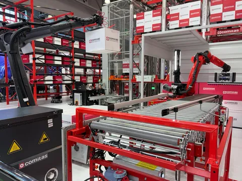
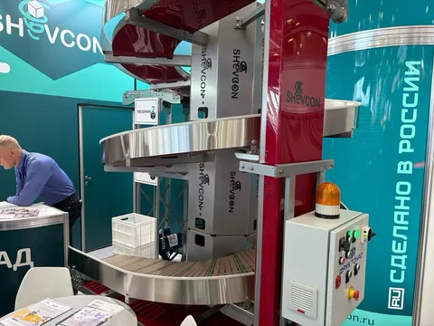
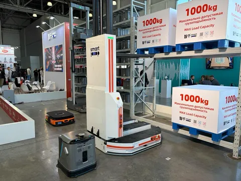
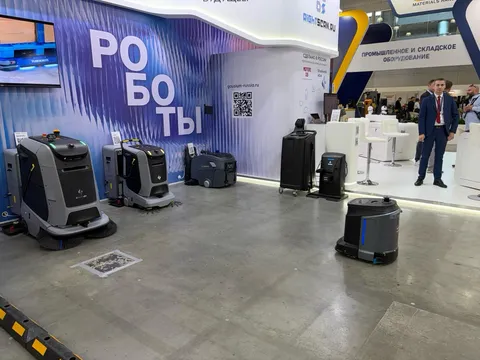
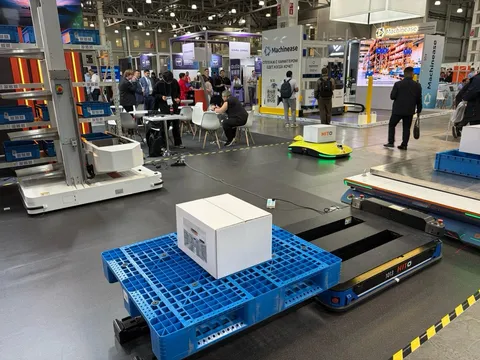
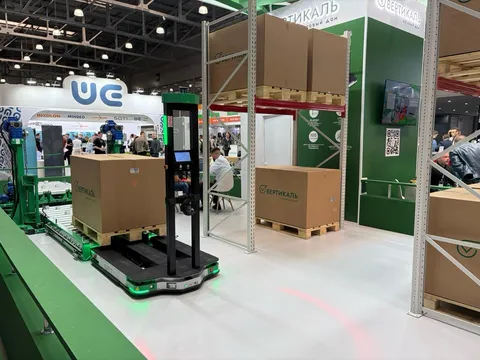
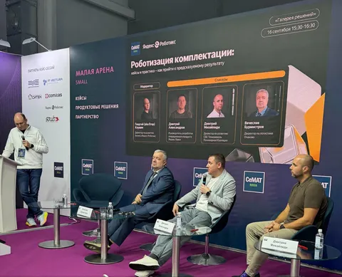

На прошлой неделе прошел Семат - крупнейшая в России выставка робототехники, автоматизации и складского оборудования. Я на ней был впервые, поэтому мне понравилось. Но восторгов нет. С одной стороны, увидеть вживую все эти технологии, роботов, оборудование - классно. С другой - ничего нового я для себя не открыл. Я ехал с надеждой увидеть что-то типа - "ого, и такое бывает! нам оно срочно надо!", но подобного не нашел.
На многих стендах выставлено примерно одно и тоже - почти одинаковые манипуляторы, однотипные amr и fmr, стандартные конвейерные системы. Расстроило, что оно никуда за последние годы не развилось. Прадовало, что раз некоторые решения (в том числе интересные мне) есть у многих, значит технология рабочая и обкатанная, и есть выбор.
Отдельно удивил разброс степени технологичности. И я даже не про не-роботизированную (а управляемую кожаным мешком) технику, а про необычное соседство стендов с роботами-гуманоидами и стендов с колесиками для рохлей, ступ и ричтраков. Притом знающие люди подсказывают, что в колесиках за последние годы прогресс продвинулся сильнее - это важный расходник, от качеств которого эффективность складских операций зависит едва ли не сильнее, чем от роботизации. Mild shock.
Ну и поучаствовал в панельной дискуссии про эффективность роботизации комплектации. Я в целом много где выступал, но панельной дискуссией это еще не называли, так что будем считать, что это мой дебют в подобном формате. Обсудили, зачем нужна роботизация, как к ней подступиться, как подготовиться, как принимать решения о масштабировании. Мой главный тезис - ни один подрядчик не сделает все за вас хорошо, так просто не бывает, все равно всегда нужно глубоко погружаться в операционку и дотачивать ее до совместимости с роботами. Только совместными усилиями можно достичь успеха. Впрочем, думаю, это не новость.






